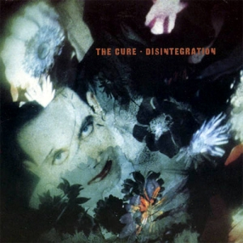
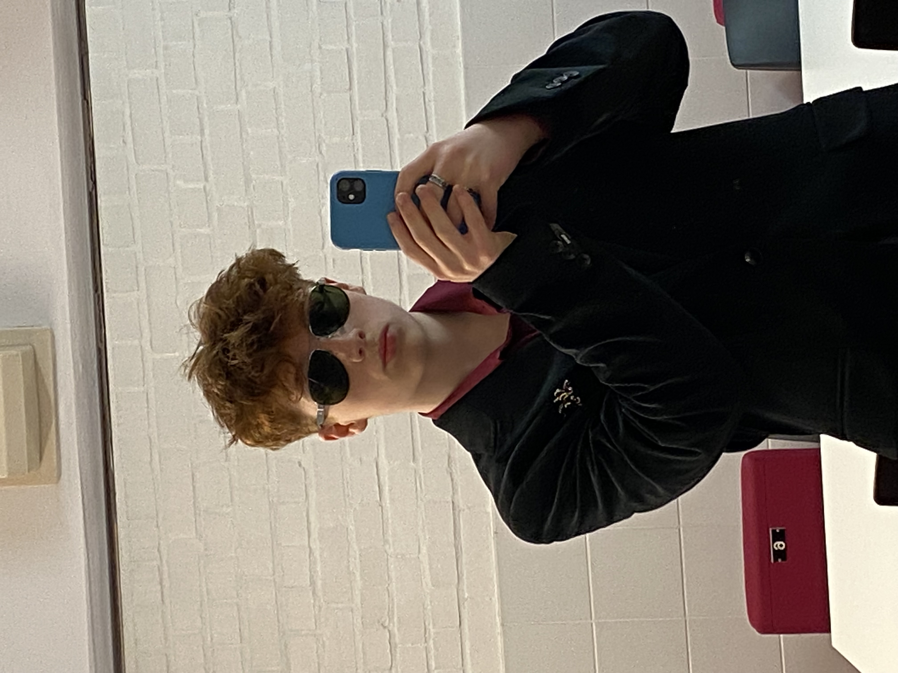

Interesses!
-
Favoriete band: The Cure

-
Favoriete album op dit moment: What's Going On - Marvin Gaye



| Vak | Mijn punten | Punten Levi | Punten Lucas (D) | Punten Luka |
|---|---|---|---|---|
| Web Development | 75% | 95% | 95% | 90% |
| Problem Solving | 65% | 75% | 70% | 70% |
| Excel | 70% | 100% | 100% | 100% |